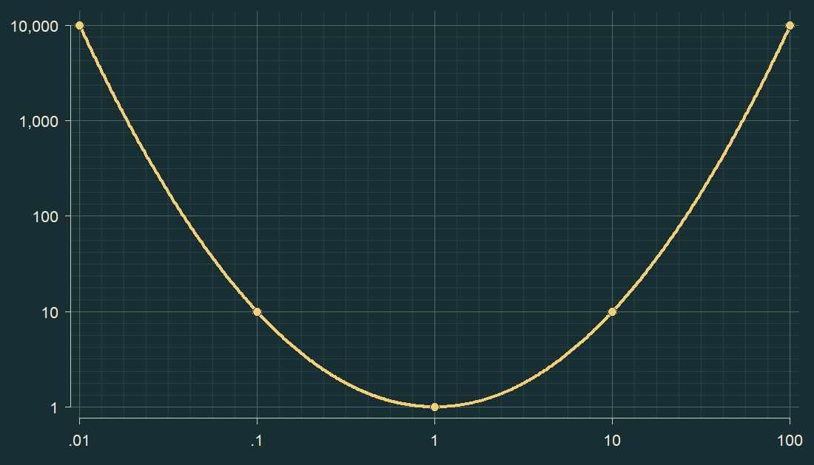

Learn and play · HYBRID v0.30
Deciphering
HYBRID
Give a mutant camouflage. Find out whether a courier can keep up with a moving float. Follow the players through the moment a number on a sheet changes the scene.
Character sheetRule 123
A low-powered mutant
Starting baseline9C2 DP
Choose agility18× 2
Add height27× 1½
Take camouflage36× 1⅓
Learn and play
Choose a character, bring the sheet to the table and see what happens next.
HYBRID in Plain EnglishStart with a person, a power and an action.Make a character sheetChoose a creation route and print a sheet for the table.Meet five charactersSee each choice, its arithmetic and the blank fields it leaves.Try the mathematicsChange a rating and see what the character can do.Sit in on a sessionListen to two players and a referee run a rescue.Play the experimental gameUse explicit house rules to carry a conflict through recovery.
Research and reference
Follow a question back to Matthew/C++’s text or check how a result was calculated.
View the Rule 45 magnitude curve
Magnitude conversionRule 45
xlog10 x
